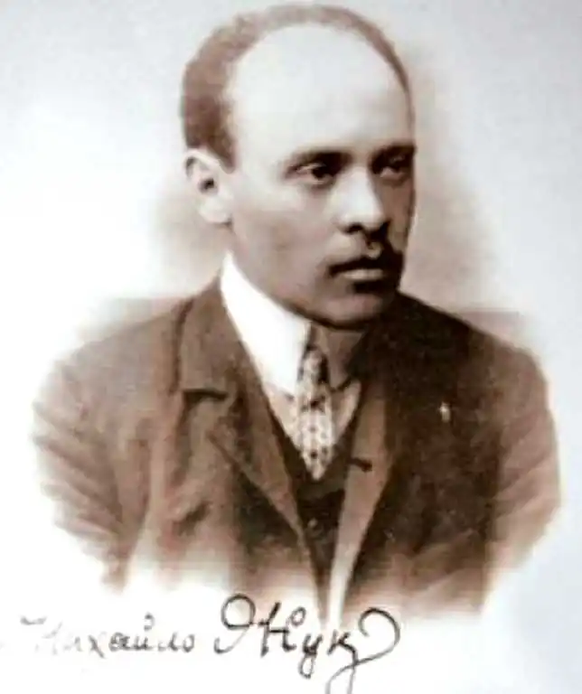

Жук Михайло Іванович народився в м. Каховці в сім'ї робітника-маляра. З восьми років працював на сезонних роботах на Дніпрі: здирав кору з колод на плотах. У 9-річному віці він у місцевого майстра Меліхова фарбував паркани, підмальовував вивіски та образи, викреслював паркети на підлогах.
Навчався М.І. Жук в Києві у рисувальній школі М. Мурашка, студіював у Московському училищі живопису, скульптури та архітектури.
У 1904 році митець закінчив Краківську Академію мистецтв (майстерня С. Виспянського та Ю. Меггофера). Перша персональна виставка М. Жука на батьківщині відбулася в Києві (1904) в залах міського музею (тепер Національний музей). Із Черніговим митця поєднувала багаторічна дружба з родиною Коцюбинських, М. Лисенком, М. Вороним, П. Тичиною. У Чернігові художник написав відомі портрети М. Коцюбинського та його сім'ї. Портретна творчість М. Жука – цінний внесок у скарбницю рідної культури. Г. Сковорода, Т. Шевченко, І. Франко, Леся Українка, І. Нечуй-Левицький, Марко Вовчок, П. Куліш, В. Стефаник, М. Лисенко, М. Вороний, В. Кричевський, О. Новаківський, Г. Нарбут, О. Мурашко – образи дорогих йому людей, яких він невтомно малював на портретах, яких залишив для нас, нащадків. Портрети мають документальний характер, хоч і виконані з великою мірою узагальнення. У 1925 році художник створив серію портретних плакатів (близько 30-ти) у техніці кольорової літографії, у 1932 – блискучу серію гравюрних портретів (з натури) українських письменників, своїх сучасників. Високохудожні монументальні панно "Чорне і біле" (1912), "Казка" (1914), "Хризантеми" (1919) – вагомий внесок майстра у відродження українського декоративного панно. Велику увагу М.І. Жук приділяв оформленню дитячої книжки. На початку ХХ ст. в Україні він практично сам працював у цій галузі, паралельно створюючи віршовий текст і його графічну інтерпретацію. В царині української книжкової дитячої графіки він виявив високу мистецьку культуру, дав зразки неабиякого смаку в оформленні книг для малечі. Особливої популярності набули збірки казок і оповідань "Ох" (1908), "Дітям України", "Казки" (1920), "Дрімайлики", "Пухирики" та ін. М.І. Жук був різнобічним графіком, зробив вагомий внесок у становлення цього жанру в сучасному українському мистецтві. Понад два десятиліття існував також і Жук-письменник. У 1912 році у Чернігові надрукована збірка віршів "Співи землі". З прозових жанрів він писав психологічні етюди, стислі оповідання, новели. Письменник створив цілу низку п'єс, серед них "Легенда", "Плебейка". М.І. Жук – автор першого українського вінка сонетів (1918). Письменник залишив цінні спогади про М. Коцюбинського, І. Франка, М. Лисенка, І. Нечуя-Левицького, Лесю Українку. У 1917 році М.І. Жуку присвоєно звання професора живопису. З 1925 по 1964 рік митець проживав в Одесі, був проректором Художнього інституту. Під його керівництвом почалося активне вивчення народного мистецтва. У 1928 році з ініціативи професора М.І. Жука на архітектурному факультеті було відкрито відділ майоліки, який з часом перетворився у керамічний факультет. В останні роки життя художник віддавав перевагу літературній діяльності: писав спогади, вірші, в яких почесне місце було відведено Одесі. Мистецькі твори М.І. Жука експонувались в Україні та за кордоном. Він брав участь у першій виставці філії Асоціації художників Червоної України в Херсоні. Помер Михайло Іванович Жук в Одесі у 1964 році.